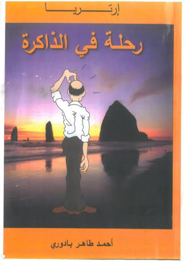

.webp)
قائمة الاسعار
| الكتب | المؤلف | القسم | السعر (شيكل) |
| رحلة في الذاكرة | احمد حامد | أدب | 45 |
| رجال في الشمس | غسان كنفاني | رواية | 30 |
| الكون في قشرة جوز | ستيفن هوكنغ | علوم | 60 |
| مبادئ html للمبتدئين | فريق المكتبة | حاسوب | 25 |
اغلفة مختارة:
رحلة في الذاكرة
أحمد حامد (أحمد حامد عيد) -كاتب مصري من مدينة الإسكندرية، وُلد في بداية ثمانينيات القرن الماضي. يعمل في مجال العمل الخدمي العام، ويُعرف بحضوره الفعّال في خدمة أهل الإسكندرية، خصوصًا في مناطق غرب المدينة.
جمع في مسيرته بين الفكر والإبداع، وقدم مجموعة من الأعمال التي تعكس رؤية فكرية مميزة وأسلوبًا أدبيًا يجمع بين العمق والبساطة، مما يجعله قريبًا من القارئ ومعبّرًا عن قضاياه.

رجال في الشمس
جال في الشمس هي الرواية الأولى للكاتب الفلسطيني غسان كنفاني، صدرت عام 1963 في بيروت. الرواية تصف تأثيرات النكبة سنة 1948 على الشعب الفلسطيني من خلال أربعة نماذج من أجيال مختلفة،
وهي تقدم الفلسطيني في صيغة اللاجئ وهي الصيغة التي يطورها غسان كنفاني في روايتيه التاليتين «ما تبقى لكم» حيث يقدم الفلسطيني/الفدائي، و«عائد إلى حيفا» حيث يقدم الفلسطيني/الثائر، متمشيا بذلك مع تطور القضية الفلسطينية ذاتها.
الكون في قشرة جوز
الكون باختصار أو الكون في قشرة جوز هو أحد كتب ستيفن هوكينغ عن الفيزياء النظرية. وهو يشرح لعامة الجمهور مختلف المسائل المتصلة بعمل الأستاذ اللوكاسي، كمبرهنات عدم الاكتمال لغودل وعلم الكون الغشائي P-branes (جزء من نظرية الأوتار الفائقة في ميكانيكا الكم).
مبادئ HTML للمبتدئين
مذكرات عن الخليل القديمة . متوفر
الاكثر مبيعا هذا الشهر
- رجال في الشمس
- رحلة في الذاكرة
- مبادئ html للمبتدئين
اقسام المكتبة
- أدب وروايات
- علوم
- حاسوب وبرمجة
- كتب الاطفال